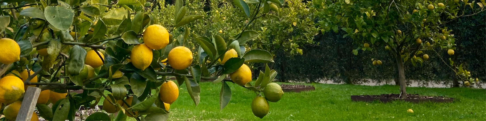
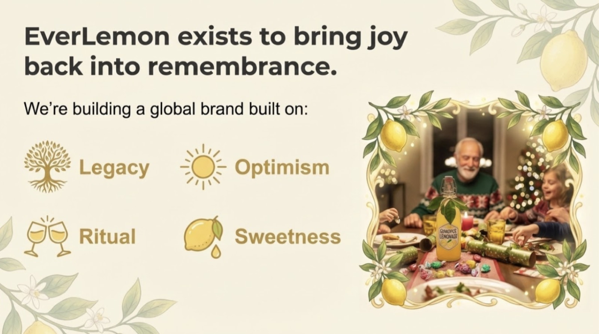
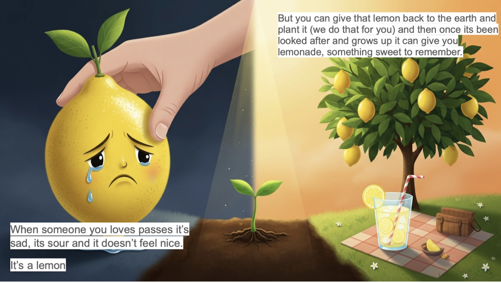

The Journey
Plant, grow, harvest, celebrate. A clearer walkthrough of how the ritual unfolds over time.
Go to the journey page
Living memorials for families who need more than a keepsake
EverLemon turns loss into a long-form ritual: a tree planted in their honour, a welcome kit to begin the story, milestone updates over time, and a future harvest celebration when the fruit is ready.
What EverLemon is
Most memorial experiences live in the first days after loss. EverLemon is built for what happens after that: the months, the years, and the family moments when grief changes shape.
This expanded site introduces the full ritual, the people behind it, the orchard story, and the impact vision. It is meant to feel less like a short landing page and more like the beginning of a lasting relationship.

From orchard to ritual
The memorial begins in the orchard, not in an abstract concept. We want families to feel the physicality of that: trees being tended, seasons moving, fruit arriving, and a promise made tangible.
Read about trust, stewardship, and the giving pledgeExplore the full site
Plant, grow, harvest, celebrate. A clearer walkthrough of how the ritual unfolds over time.
Go to the journey page
Why the concept matters emotionally, who it is for, and how families may use it in different ways.
Read the story page
The stewardship model, partner orchard logic, and the long-range commitments behind the promise.
See the impact page
A visual idea for the brand
“Not a one-off gift. A story that ripens with the family.”
The concept is simple enough to explain quickly, but rich enough to deserve a fuller home online. That is what this new site structure is designed to support.
Ready to explore further?